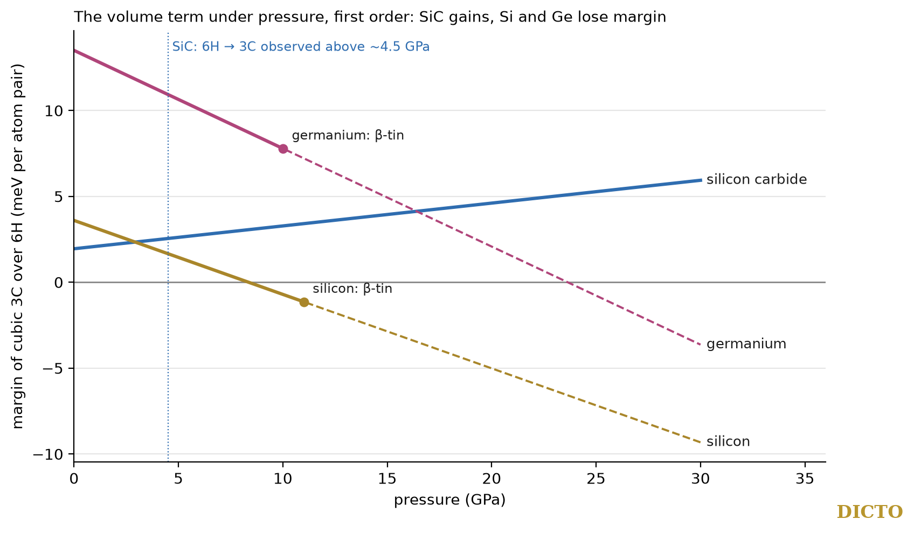

Entropy and pressure
Which stacking a crystal takes is decided by its free energy: energy, entropy, and, under pressure, the term pressure × volume. Paper #68 compared real volumes with the law's straight line. DICTO proposed to go further and test the law's form on the two other quantities: the entropy of hard spheres, where energy plays no part at all, and the enthalpy under pressure, where the volume enters directly.
As in #68: in the axial Ising (ANNNI) model a property X of a stacking, per atom pair and relative to 3C, is X(2H) = 2(J1 + J3), X(4H) = J1 + 2J2 + J3, X(6H) = (2/3)(J1 + 2J2 + 3J3) (convention of Keller et al., 2023), and X is a straight line in h exactly when J2 = J3 = 0 (#68, Proposition). Mau and Huse (1999) use the same idea with the layer types as spins: a field h for each layer, a coupling J between neighbouring layers, and h′, J′ for longer ranges. A straight line in the hexagonality is the case of the field alone.
Hard spheres have no energy; their stackings differ only in entropy, by about 10⁻³ kB per sphere, with cubic stacking the highest (fcc − hcp = 0.00115 kB per sphere at close packing, Mau and Huse; 0.001164(8), Elser 2014). Mau and Huse measured the layer couplings of this entropy:
| Density | field h | coupling J | h′ | J/h |
|---|---|---|---|---|
| close packing | 55 | 6 | — | 0.11 |
| near melting (about 74% of close packing) | 37 | 18 | 9 | 0.49 |
(in 10⁻⁵ kB per sphere; all terms favour cubic stacking). So at close packing the stacking entropy is about 90% of the law's form, a straight line in the hexagonality, and the farther terms grow as the spheres rattle more freely toward melting. Elser points out why the entropy differs at all: if every sphere moved in a fixed cage of its neighbours, the difference between cubic and hexagonal stacking would be exactly zero; it comes from collective motion. The law describes the fixed geometry; the entropy departs from its form only as far as the spheres move together. Entropy is not volume, and we compare the form only, not the numbers.
At pressure P a stacking's enthalpy per pair is E + PV, so in the layer model the volume couplings JkV add P·JkV to the energy couplings.
Proof. The volume term is P·V, and V has couplings (J1V, 0, 0) by assumption; so P·V adds P·J1V to J1 and nothing to J2, J3. A property with nearest term only is s·h with s = 2J1 (#68), the same amount per hexagonal layer, and its fault values are 4J1, 4J1, 2J1 (#68). ∎
Real crystals are not exactly of this form, so we computed, at first order (couplings and volumes at zero pressure), the margin by which cubic 3C beats 6H, 4H and 2H, from the same published data as #68 (silicon carbide with van der Waals correction: energies 15, 2.7 and 1.3 meV per pair above 3C for 2H, 4H and 6H, Kawanishi and Mizoguchi; silicon and germanium, Keller et al.).

| Material | nearest share of the volume couplings | 3C over 6H | 3C over 4H | 3C over 2H |
|---|---|---|---|---|
| silicon carbide | 0.78 | +0.13 | +0.11 | +0.17 |
| silicon | 0.39 | −0.43 | −0.36 | −0.13 |
| germanium | 0.70 | −0.57 | −0.50 | −0.32 |
(change of the margin in meV per atom pair per GPa; nearest share = |J1V| / (|J1V| + |J2V| + |J3V|).) Silicon carbide's volume is close to the law's form and rises slightly with the hexagonality, so pressure strengthens the cubic stacking. That agrees with experiment: 3C becomes more stable with pressure, and 6H turns into 3C above about 4.5 GPa at high temperature (Sugiyama and Togaya, 2001; review, 2018). In silicon and germanium the volume falls with the hexagonality and bends away from the straight line, and pressure tilts them toward hexagonal-type stackings; at first order silicon's margin over 6H would close near 8 GPa, but silicon turns into β-tin near 11 GPa and the first-order estimate ignores how compression changes the couplings, so this is a tilt, not a predicted phase. For germanium the margins close only at 24–50 GPa, far beyond its own transition.
The law's straight line describes the ideal part of what chooses a stacking. Near close packing the entropy of hard spheres is about 90% of that form. Under pressure, a volume of that form could only tilt the balance between cubic and hexagonal; silicon carbide, close to it, is pushed toward cubic as experiments see; silicon and germanium, further from it, are tilted the other way, through the farther couplings their relaxation adds.
The layer (ANNNI) description of polytypes is Heine's; the entropy couplings of hard spheres are Mau and Huse's (1999), with Bolhuis, Frenkel and others before them; the net entropy difference and its phonon origin are Elser's (2014); the energies and volumes are those of Kawanishi and Mizoguchi (2015) and Keller et al. (2023); the high-pressure behaviour of silicon carbide is from Sugiyama and Togaya (2001) and a 2018 review. The statement that a volume of the law's form shifts only J1 under pressure is an immediate consequence of the model, which we state with its proof. The Hexagonality Law is #66; real polytypes are #68.
Sources checked (28 October 2026). Read: S.-C. Mau and D. A. Huse, Stacking entropy of hard-sphere crystals, Phys. Rev. E 59, 4396 (1999), arXiv cond-mat/9810287; V. Elser, Phonon contribution to the entropy of hard-sphere crystals, arXiv 1403.1784 (2014); S. Kawanishi and T. Mizoguchi, arXiv 1512.04626 (energies and Table I); M. Keller et al., arXiv 2302.10822 (Tables I and II); all in the reference library. Search summaries, not read in full: Y. Sugiyama and M. Togaya (2001, Hokkaido University pdf); the 2018 review of silicon carbide at high pressure and temperature (Daviau and Lee, Yale pdf); Karch et al., Phys. Rev. B (1996); Maitani et al. (2024). Reference library (ask-library: "hard sphere crystal fcc hcp entropy difference stacking"; "Mau Huse stacking entropy hard-sphere crystals"; "Bolhuis Frenkel hard sphere fcc hcp free energy"): Ganesh and Nasr (2023), Hart, Hansen and Kuhs (2021), others not relevant.
Data and code. Studies 2026-10-28-hard-sphere-entropy (README) and 2026-10-28-pressure (pressure.py, pressure.json, fig70.py), attached to this record. References: DICTO, The Focus (#66), DICTO DOI 10.5281/zenodo.23717687; Real Polytypes and the Hexagonality Law (#68), 10.5281/zenodo.23719275.